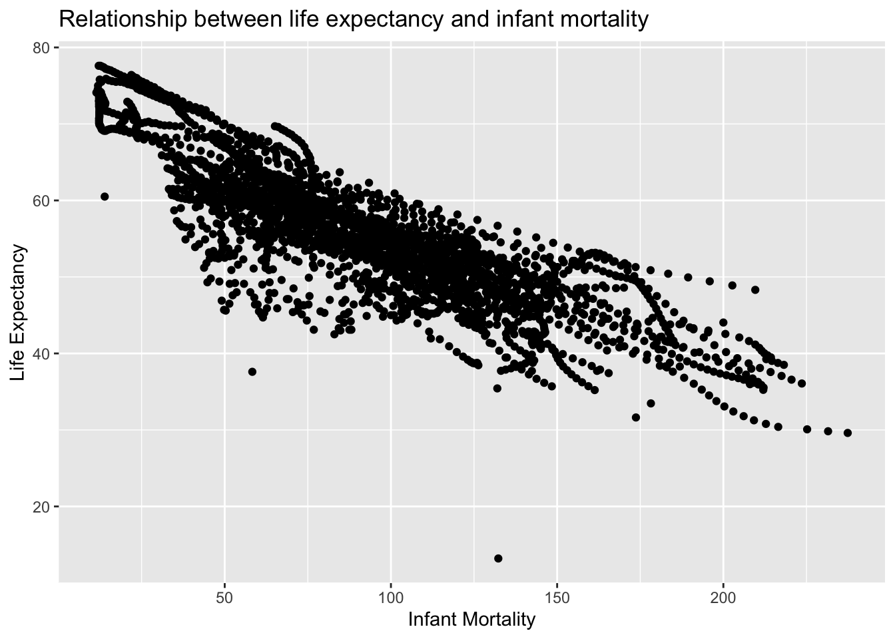
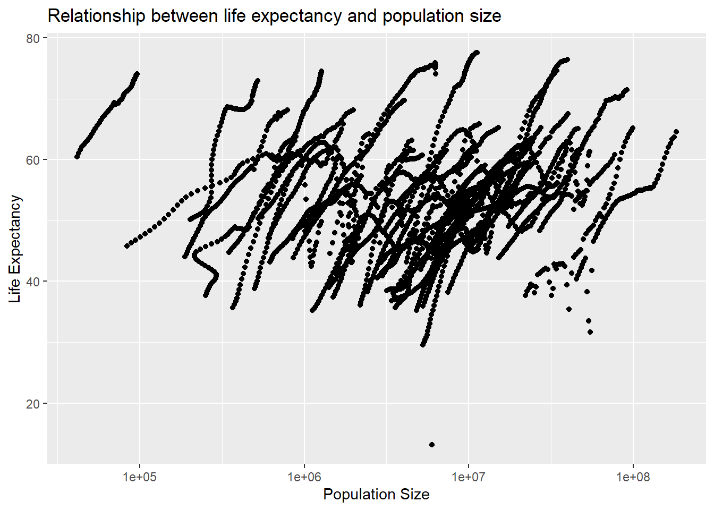
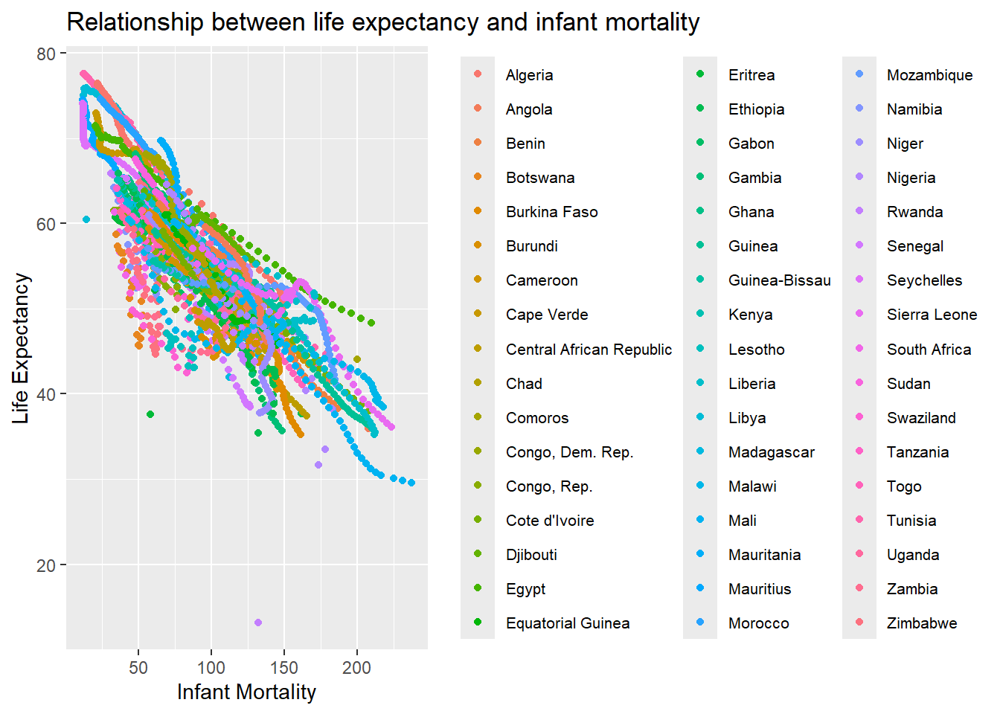
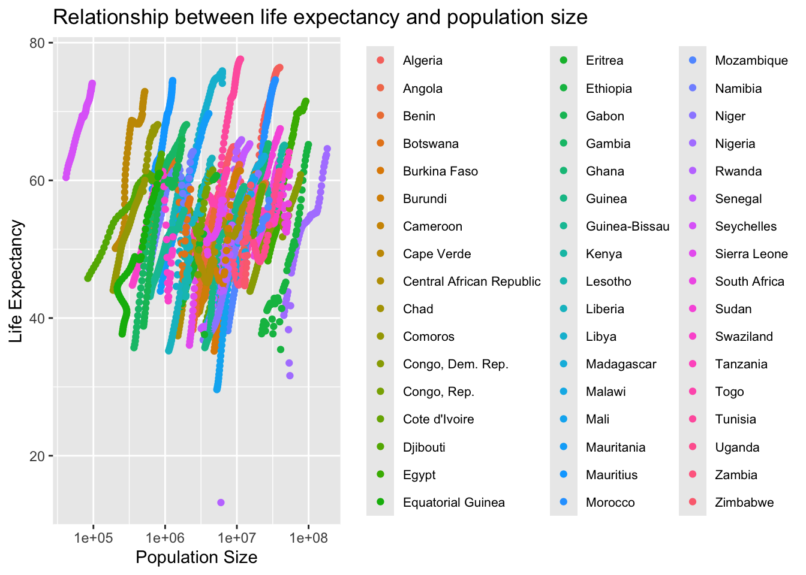
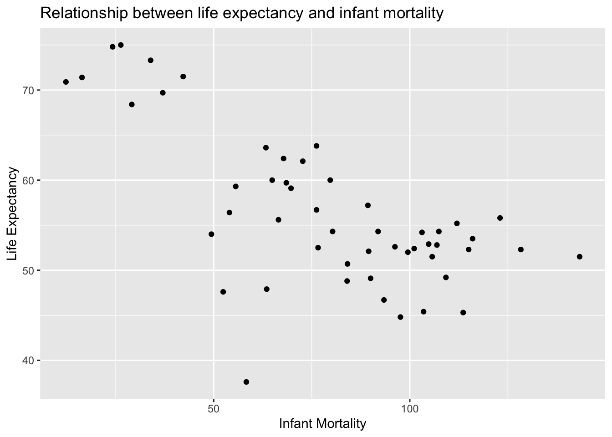
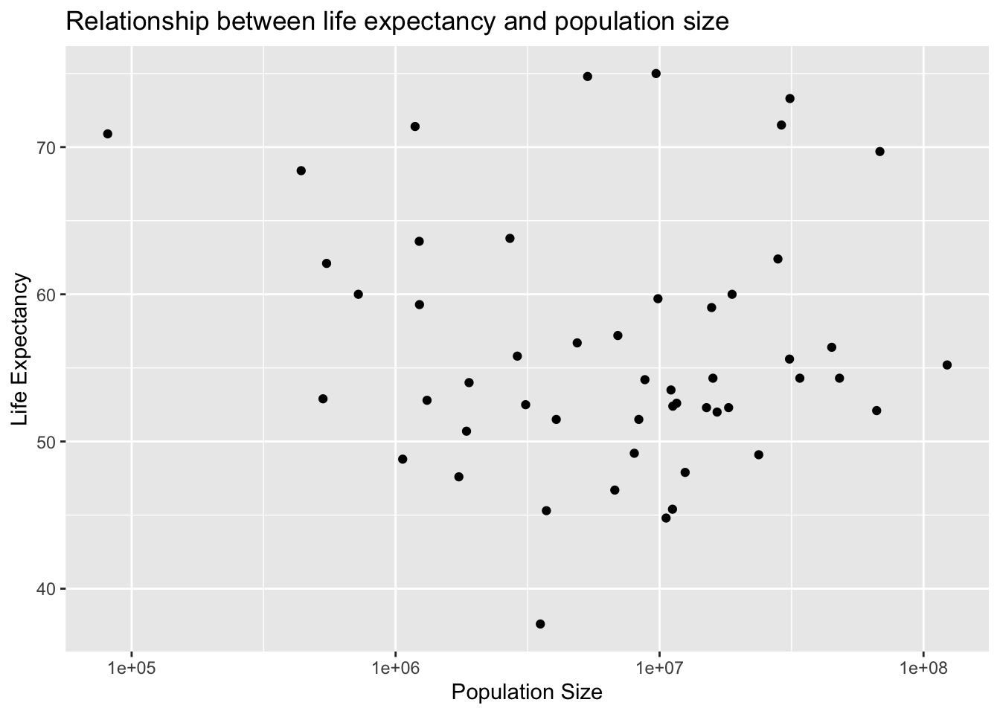
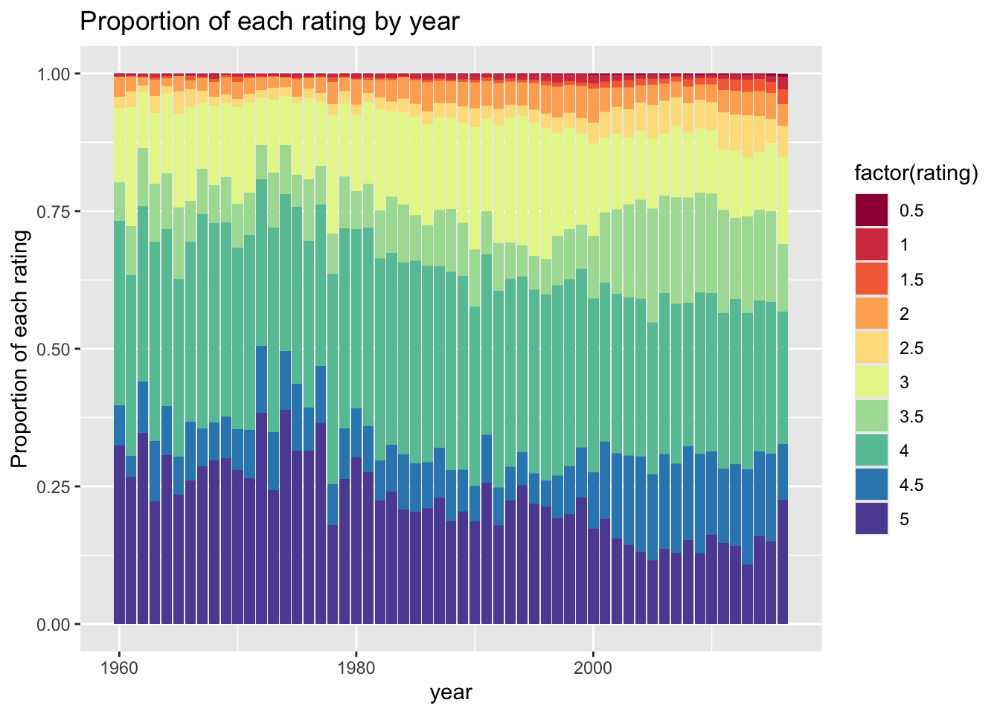
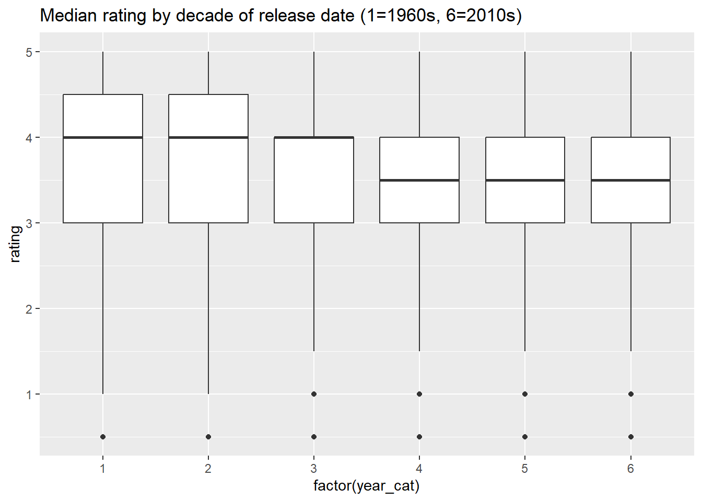
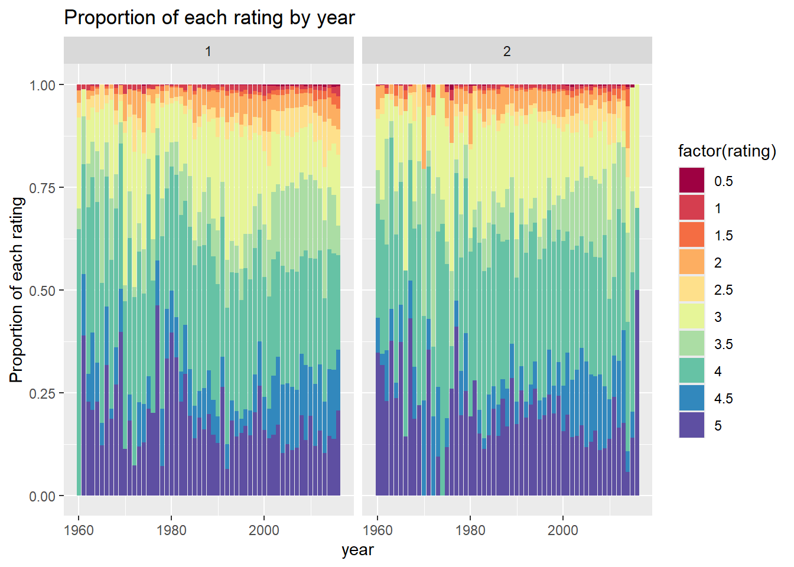
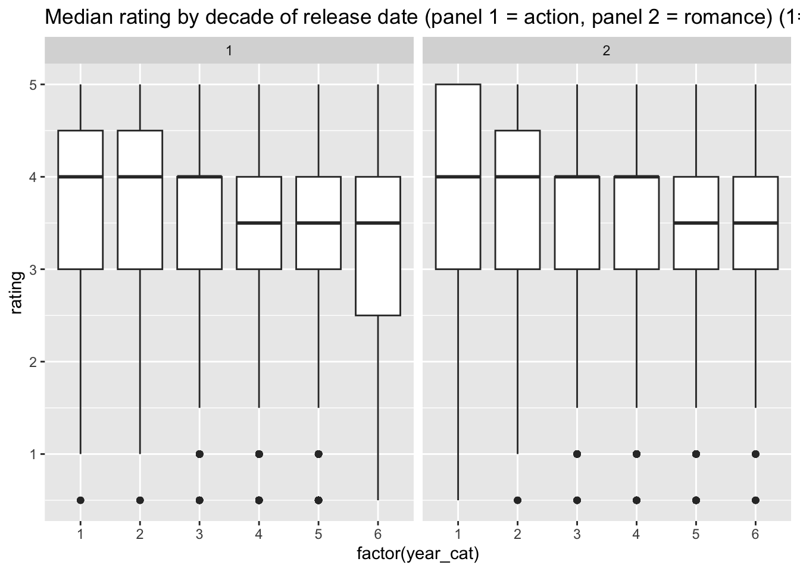

Placeholder file for the future R coding exercise.
Load package
# load packagelibrary(dslabs)library(tidyverse)
── Attaching core tidyverse packages ──────────────────────── tidyverse 2.0.0 ──
✔ dplyr 1.1.4 ✔ readr 2.1.5
✔ forcats 1.0.0 ✔ stringr 1.5.1
✔ ggplot2 3.5.1 ✔ tibble 3.2.1
✔ lubridate 1.9.4 ✔ tidyr 1.3.1
✔ purrr 1.0.4
── Conflicts ────────────────────────────────────────── tidyverse_conflicts() ──
✖ dplyr::filter() masks stats::filter()
✖ dplyr::lag() masks stats::lag()
ℹ Use the conflicted package (<http://conflicted.r-lib.org/>) to force all conflicts to become errors
#look at help file for gapminder datahelp(gapminder)#get an overview of data structurestr(gapminder)
'data.frame': 10545 obs. of 9 variables:
$ country : Factor w/ 185 levels "Albania","Algeria",..: 1 2 3 4 5 6 7 8 9 10 ...
$ year : int 1960 1960 1960 1960 1960 1960 1960 1960 1960 1960 ...
$ infant_mortality: num 115.4 148.2 208 NA 59.9 ...
$ life_expectancy : num 62.9 47.5 36 63 65.4 ...
$ fertility : num 6.19 7.65 7.32 4.43 3.11 4.55 4.82 3.45 2.7 5.57 ...
$ population : num 1636054 11124892 5270844 54681 20619075 ...
$ gdp : num NA 1.38e+10 NA NA 1.08e+11 ...
$ continent : Factor w/ 5 levels "Africa","Americas",..: 4 1 1 2 2 3 2 5 4 3 ...
$ region : Factor w/ 22 levels "Australia and New Zealand",..: 19 11 10 2 15 21 2 1 22 21 ...
#get a summary of datasummary(gapminder)
country year infant_mortality life_expectancy
Albania : 57 Min. :1960 Min. : 1.50 Min. :13.20
Algeria : 57 1st Qu.:1974 1st Qu.: 16.00 1st Qu.:57.50
Angola : 57 Median :1988 Median : 41.50 Median :67.54
Antigua and Barbuda: 57 Mean :1988 Mean : 55.31 Mean :64.81
Argentina : 57 3rd Qu.:2002 3rd Qu.: 85.10 3rd Qu.:73.00
Armenia : 57 Max. :2016 Max. :276.90 Max. :83.90
(Other) :10203 NA's :1453
fertility population gdp continent
Min. :0.840 Min. :3.124e+04 Min. :4.040e+07 Africa :2907
1st Qu.:2.200 1st Qu.:1.333e+06 1st Qu.:1.846e+09 Americas:2052
Median :3.750 Median :5.009e+06 Median :7.794e+09 Asia :2679
Mean :4.084 Mean :2.701e+07 Mean :1.480e+11 Europe :2223
3rd Qu.:6.000 3rd Qu.:1.523e+07 3rd Qu.:5.540e+10 Oceania : 684
Max. :9.220 Max. :1.376e+09 Max. :1.174e+13
NA's :187 NA's :185 NA's :2972
region
Western Asia :1026
Eastern Africa : 912
Western Africa : 912
Caribbean : 741
South America : 684
Southern Europe: 684
(Other) :5586
#determine the type of object gapminder isclass(gapminder)
[1] "data.frame"
Creat new object africadata
#assign only the African countries to a new object/variable called africadataafricadata <- gapminder[gapminder$continent =="Africa", ]# Check the structure of the africadata objectstr(africadata)
'data.frame': 2907 obs. of 9 variables:
$ country : Factor w/ 185 levels "Albania","Algeria",..: 2 3 18 22 26 27 29 31 32 33 ...
$ year : int 1960 1960 1960 1960 1960 1960 1960 1960 1960 1960 ...
$ infant_mortality: num 148 208 187 116 161 ...
$ life_expectancy : num 47.5 36 38.3 50.3 35.2 ...
$ fertility : num 7.65 7.32 6.28 6.62 6.29 6.95 5.65 6.89 5.84 6.25 ...
$ population : num 11124892 5270844 2431620 524029 4829291 ...
$ gdp : num 1.38e+10 NA 6.22e+08 1.24e+08 5.97e+08 ...
$ continent : Factor w/ 5 levels "Africa","Americas",..: 1 1 1 1 1 1 1 1 1 1 ...
$ region : Factor w/ 22 levels "Australia and New Zealand",..: 11 10 20 17 20 5 10 20 10 10 ...
# Check the summary of the africadata objectsummary(africadata)
country year infant_mortality life_expectancy
Algeria : 57 Min. :1960 Min. : 11.40 Min. :13.20
Angola : 57 1st Qu.:1974 1st Qu.: 62.20 1st Qu.:48.23
Benin : 57 Median :1988 Median : 93.40 Median :53.98
Botswana : 57 Mean :1988 Mean : 95.12 Mean :54.38
Burkina Faso: 57 3rd Qu.:2002 3rd Qu.:124.70 3rd Qu.:60.10
Burundi : 57 Max. :2016 Max. :237.40 Max. :77.60
(Other) :2565 NA's :226
fertility population gdp continent
Min. :1.500 Min. : 41538 Min. :4.659e+07 Africa :2907
1st Qu.:5.160 1st Qu.: 1605232 1st Qu.:8.373e+08 Americas: 0
Median :6.160 Median : 5570982 Median :2.448e+09 Asia : 0
Mean :5.851 Mean : 12235961 Mean :9.346e+09 Europe : 0
3rd Qu.:6.860 3rd Qu.: 13888152 3rd Qu.:6.552e+09 Oceania : 0
Max. :8.450 Max. :182201962 Max. :1.935e+11
NA's :51 NA's :51 NA's :637
region
Eastern Africa :912
Western Africa :912
Middle Africa :456
Northern Africa :342
Southern Africa :285
Australia and New Zealand: 0
(Other) : 0
Creat two objects
# Create an object containing only 'infant_mortality' and 'life_expectancy'infant_life <- africadata[, c("infant_mortality", "life_expectancy")]# Check the structure of 'infant_life'str(infant_life)
'data.frame': 2907 obs. of 2 variables:
$ infant_mortality: num 148 208 187 116 161 ...
$ life_expectancy : num 47.5 36 38.3 50.3 35.2 ...
# Check the summary of 'infant_life'summary(infant_life)
infant_mortality life_expectancy
Min. : 11.40 Min. :13.20
1st Qu.: 62.20 1st Qu.:48.23
Median : 93.40 Median :53.98
Mean : 95.12 Mean :54.38
3rd Qu.:124.70 3rd Qu.:60.10
Max. :237.40 Max. :77.60
NA's :226
# Create an object containing only 'population' and 'life_expectancy'pop_life <- africadata[, c("population", "life_expectancy")]# Check the structure of 'pop_life'str(pop_life)
'data.frame': 2907 obs. of 2 variables:
$ population : num 11124892 5270844 2431620 524029 4829291 ...
$ life_expectancy: num 47.5 36 38.3 50.3 35.2 ...
# Check the summary of 'pop_life'summary(pop_life)
population life_expectancy
Min. : 41538 Min. :13.20
1st Qu.: 1605232 1st Qu.:48.23
Median : 5570982 Median :53.98
Mean : 12235961 Mean :54.38
3rd Qu.: 13888152 3rd Qu.:60.10
Max. :182201962 Max. :77.60
NA's :51
Plot life expectancy as a function of infant mortality and as a function of population size
#load packagelibrary(ggplot2)#plot life expectancy as a function of infant mortalityggplot(infant_life, aes(x = infant_mortality, y = life_expectancy)) +geom_point() +labs(title ="Relationship between life expectancy and infant mortality",x ="Infant Mortality",y ="Life Expectancy")

#plot life expectancy as a function of population sizeggplot(pop_life, aes(x = population, y = life_expectancy)) +geom_point() +scale_x_log10() +# set x-axis to log scalelabs(title ="Relationship between life expectancy and population size",x ="Population Size",y ="Life Expectancy")

Descriptive text
Plot 1: There is a negative correlation between infant mortality and life expectancy because lower infant mortality often leads to higher life expectancy. Plot 2: There is a positive correlation between population and life expectancy because countries with larger population often have better healthcare system which leads to higher life expentancy.
‘Streaks’: In both plots, especially the second one, there are ‘streaks’ of data that seem to go together. After taking a look at the africadata, I believe it may because of the effect of years. For a certain country, as year goes larger, both the population and life expectancy become higher (similar situation with infant mortality and life expectancy). So I try to make another two plots marking different countries.
Remake plots and mark different countries
#plot life expectancy as a function of infant mortality, with different colors for each countryggplot(infant_life, aes(x = infant_mortality, y = life_expectancy, color = africadata$country)) +geom_point() +labs(title ="Relationship between life expectancy and infant mortality",x ="Infant Mortality",y ="Life Expectancy") +theme(legend.title =element_blank(), # adjust legendlegend.text =element_text(size =8))

#plot life expectancy as a function of population size, with different colors for each countryggplot(pop_life, aes(x = population, y = life_expectancy, color = africadata$country)) +geom_point() +scale_x_log10() +# set x-axis to log scalelabs(title ="Relationship between life expectancy and population size",x ="Population Size",y ="Life Expectancy") +theme(legend.title =element_blank(), # adjust legendlegend.text =element_text(size =8))

From above two new generated plots, we can confirm that the “streaks” are point clusters from the same country.
More data processing
#check which years have missing data for infant mortalitymissing_data_years <- africadata[is.na(africadata$infant_mortality), "year"]table(missing_data_years) # count of missing data per year
# Extract data for the year 2000data_2000 <- africadata[africadata$year ==2000, ]# Check the structure and summarystr(data_2000)
'data.frame': 51 obs. of 9 variables:
$ country : Factor w/ 185 levels "Albania","Algeria",..: 2 3 18 22 26 27 29 31 32 33 ...
$ year : int 2000 2000 2000 2000 2000 2000 2000 2000 2000 2000 ...
$ infant_mortality: num 33.9 128.3 89.3 52.4 96.2 ...
$ life_expectancy : num 73.3 52.3 57.2 47.6 52.6 46.7 54.3 68.4 45.3 51.5 ...
$ fertility : num 2.51 6.84 5.98 3.41 6.59 7.06 5.62 3.7 5.45 7.35 ...
$ population : num 31183658 15058638 6949366 1736579 11607944 ...
$ gdp : num 5.48e+10 9.13e+09 2.25e+09 5.63e+09 2.61e+09 ...
$ continent : Factor w/ 5 levels "Africa","Americas",..: 1 1 1 1 1 1 1 1 1 1 ...
$ region : Factor w/ 22 levels "Australia and New Zealand",..: 11 10 20 17 20 5 10 20 10 10 ...
summary(data_2000)
country year infant_mortality life_expectancy
Algeria : 1 Min. :2000 Min. : 12.30 Min. :37.60
Angola : 1 1st Qu.:2000 1st Qu.: 60.80 1st Qu.:51.75
Benin : 1 Median :2000 Median : 80.30 Median :54.30
Botswana : 1 Mean :2000 Mean : 78.93 Mean :56.36
Burkina Faso: 1 3rd Qu.:2000 3rd Qu.:103.30 3rd Qu.:60.00
Burundi : 1 Max. :2000 Max. :143.30 Max. :75.00
(Other) :45
fertility population gdp continent
Min. :1.990 Min. : 81154 Min. :2.019e+08 Africa :51
1st Qu.:4.150 1st Qu.: 2304687 1st Qu.:1.274e+09 Americas: 0
Median :5.550 Median : 8799165 Median :3.238e+09 Asia : 0
Mean :5.156 Mean : 15659800 Mean :1.155e+10 Europe : 0
3rd Qu.:5.960 3rd Qu.: 17391242 3rd Qu.:8.654e+09 Oceania : 0
Max. :7.730 Max. :122876723 Max. :1.329e+11
region
Eastern Africa :16
Western Africa :16
Middle Africa : 8
Northern Africa : 6
Southern Africa : 5
Australia and New Zealand: 0
(Other) : 0
More plotting
#plot life expectancy as a function of infant mortalityggplot(data_2000, aes(x = infant_mortality, y = life_expectancy)) +geom_point() +labs(title ="Relationship between life expectancy and infant mortality",x ="Infant Mortality",y ="Life Expectancy")

#plot life expectancy as a function of population sizeggplot(data_2000, aes(x = population, y = life_expectancy)) +geom_point() +scale_x_log10() +# set x-axis to log scalelabs(title ="Relationship between life expectancy and population size",x ="Population Size",y ="Life Expectancy")

There is a negative correlation between infant mortality and life expectancy, and no noticeable correlation between population size and life expectancy.
Simple model fits
#fit linear model with infant mortality as the predictor for life expectancyfit1 <-lm(life_expectancy ~ infant_mortality, data = data_2000)#fit linear model with population size as the predictor for life expectancyfit2 <-lm(life_expectancy ~ population, data = data_2000)# Display the summary of both modelssummary(fit1)
Call:
lm(formula = life_expectancy ~ infant_mortality, data = data_2000)
Residuals:
Min 1Q Median 3Q Max
-22.6651 -3.7087 0.9914 4.0408 8.6817
Coefficients:
Estimate Std. Error t value Pr(>|t|)
(Intercept) 71.29331 2.42611 29.386 < 2e-16 ***
infant_mortality -0.18916 0.02869 -6.594 2.83e-08 ***
---
Signif. codes: 0 '***' 0.001 '**' 0.01 '*' 0.05 '.' 0.1 ' ' 1
Residual standard error: 6.221 on 49 degrees of freedom
Multiple R-squared: 0.4701, Adjusted R-squared: 0.4593
F-statistic: 43.48 on 1 and 49 DF, p-value: 2.826e-08
summary(fit2)
Call:
lm(formula = life_expectancy ~ population, data = data_2000)
Residuals:
Min 1Q Median 3Q Max
-18.429 -4.602 -2.568 3.800 18.802
Coefficients:
Estimate Std. Error t value Pr(>|t|)
(Intercept) 5.593e+01 1.468e+00 38.097 <2e-16 ***
population 2.756e-08 5.459e-08 0.505 0.616
---
Signif. codes: 0 '***' 0.001 '**' 0.01 '*' 0.05 '.' 0.1 ' ' 1
Residual standard error: 8.524 on 49 degrees of freedom
Multiple R-squared: 0.005176, Adjusted R-squared: -0.01513
F-statistic: 0.2549 on 1 and 49 DF, p-value: 0.6159
Comments:
For fit1: The p<.001, which indicates that infant mortality is a significant predictor of life expectancy in the year 2000, and there is a negative relationship between them. For fit2: The p=0.616>0.05, which indicates that population size is not a significant predictor of life expectancy in the year 2000.
This section contributed by Rayleen Lewis.
Module 3 Part 2: Exploration of movielens data
I chose to explore the ‘movielens’ dataset. This contains information on movie titles, release year, genre, and ratings (including user who rated the movie and a time stamp for the rating).
Here’s a summary of the data structure and variables:
There are approximately 900 different entries for genre, many of which include multiple genres. It is important to note that the genres always have a capitalized first letter and appear in alphabetical order (e.g., Crime|Drama|Film-Noir|Romance). I will need to get this variable into a usable format during the data cleaning process.
Data cleaning
I’m interested in whether the mean movie rating has increased over time, especially as special effects have improved. Since this is particularly relevant for action movies, I’m interested in seeing if this association differs between action and romance movies (a genre where special effects don’t usually matter).
Another thing noticed during the data exploration was that this dataset spans from 1902 to 2016. The first use of computer animation in a movie didn’t occur until 1965, so I will also exclude movies prior to 1960.
To get the data into a usable format to answer these questions, I conducted the following steps:
Dropped unnecessary variables (title, userID, and timestamp)
Removed observations where the movie year as missing (i.e., NA)
Removed rows with a year prior to 1960
Create indicator variables for action movies and romance movies
Create a categorical year variable to represent decade the movie came out (for exploratory purposes)
#Creating new, clean dataset classed movies from movielensmovies <- movielens %>%#Removing unnecessary variablesselect(movieId, year, genres, rating) %>%#Deleting rows missing year informationfilter(!is.na(year)) %>%#Deleting rows with year < 1960filter(year >=1960) %>%#Creating action indicator variable, 1 if Action is in the genre list, 0 otherwisemutate(action =if_else(grepl("Action", genres), 1, 0)) %>%#Creating romance indicator variable, 1 if romance is in the genre list, 0 otherwisemutate(romance =if_else(grepl("Romance", genres), 1, 0)) %>%#Creating 4 level indicator that combines action and romance indicatorsmutate(act_rom =if_else(action ==0& romance ==0, 0, if_else(action ==1& romance ==0, 1, if_else(action ==0& romance ==1, 2,if_else(action ==1& romance ==1, 3, NA))))) %>%#Creating categorical year variable grouped by decademutate(year_cat =case_when(year <1970~1, year >=1970& year <1980~2, year >=1980& year <1990~3, year >=1990& year <2000~4, year >=2000& year <2010~5, year >=2010~6))#Confirming structure and summary of the new dataset moviesstr(movies)
movieId year genres rating
Min. : 1 Min. :1960 Drama : 7187 Min. :0.500
1st Qu.: 1073 1st Qu.:1989 Comedy : 6621 1st Qu.:3.000
Median : 2471 Median :1996 Comedy|Romance : 3761 Median :4.000
Mean : 13017 Mean :1994 Drama|Romance : 3240 Mean :3.523
3rd Qu.: 5507 3rd Qu.:2001 Comedy|Drama : 3197 3rd Qu.:4.000
Max. :163949 Max. :2016 Comedy|Drama|Romance: 3039 Max. :5.000
(Other) :67606
action romance act_rom year_cat
Min. :0.0000 Min. :0.0000 Min. :0.0000 Min. :1.000
1st Qu.:0.0000 1st Qu.:0.0000 1st Qu.:0.0000 1st Qu.:3.000
Median :0.0000 Median :0.0000 Median :0.0000 Median :4.000
Mean :0.2817 Mean :0.1866 Mean :0.6549 Mean :3.984
3rd Qu.:1.0000 3rd Qu.:0.0000 3rd Qu.:1.0000 3rd Qu.:5.000
Max. :1.0000 Max. :1.0000 Max. :3.0000 Max. :6.000
Next I want to confirm that the new indicator variables appeared to work by spot checking the new dataset.
#Rows with Action included in the genre all have a value of 1 for action and 0 if they do not have action in the genre. Same goes for romance.movies %>%select(genres, action, romance, act_rom) %>%head(20)
#Movies with both action and romance in the genre have values of 1 for both indicator variables and 3 for combined variablemovies %>%select(genres, action, romance, act_rom) %>%filter(genres =="Action|Adventure|Comedy|Romance|Thriller") %>%head(10)
This looks good, movies with Action in the genre (even multi-genre movies) have a value of 1 for the action indicator. Same goes for romance movies for the romance indicator. Movies not in these genres have a 0 for the respective indicator variable.
Exploratory figures
These figures are being used to explore the whether movie ratings have increased with increasing use of computer graphics. The first figure is a stacked bar chart with year on the x-axis and the proportion of each rating on the y-axis. Ratings are color coded. The second is a boxplot of ratings by decade of release. These are plotted using the data overall and by genre (action/romance). As a note, since these are meant to be exploratory, I did not make them “pretty” by adjusting labels or aesthetic features.
#Figure 1: Stacked bar chart looking at proportion of each rating by yearmovies_sorted <- movies %>%arrange(rating)ggplot(movies_sorted, aes(x=year, y = rating, fill=factor(rating))) +geom_bar(position="fill", stat="identity") +scale_fill_brewer(palette ="Spectral") +labs(title ="Proportion of each rating by year", y="Proportion of each rating")

Overall, it seems like the average movie rating is likely decreasing since the cumulative proportion of ratings 4-5 has decreased with time.
#Creating boxing plot of median movie rating by decade - overallggplot(movies, aes(x=factor(year_cat), y=rating)) +geom_boxplot() +labs(title="Median rating by decade of release date (1=1960s, 6=2010s)")

The median rating has also decreased somewhat over time. It also looks like ratings have become less varied (tighter IQR) with time.
The next set of figures are meant to be used to understand differences in the association between rating and year by genre (action vs romance).
#Figure 2: Stacked bar chart looking at proportion of each rating by year for action movies and romance movies onlymovies_sorted_act_rom <- movies %>%arrange(rating) %>%filter(act_rom ==1| act_rom ==2)ggplot(movies_sorted_act_rom, aes(x=year, y = rating, fill=factor(rating))) +geom_bar(position="fill", stat="identity") +scale_fill_brewer(palette ="Spectral") +labs(title ="Proportion of each rating by year", y="Proportion of each rating")+facet_grid(~act_rom)

There aren’t any particularly obvious patterns in ratings by movie type (action on the left, romance on the right).
#Creating boxing plot of median movie rating by decade - by genre (action and romance)ggplot(movies_sorted_act_rom, aes(x=factor(year_cat), y=rating)) +geom_boxplot() +labs(title="Median rating by decade of release date (panel 1 = action, panel 2 = romance) (1=1960s, 6=2010s)")+facet_grid(~act_rom)

Similarly, the median (IQR) ratings are similar between the two genres.
Statisical models
To test the first research question, I performed a simple linear regression of rating as the outcome and year as the predictor. As a note, rating is not continuous, it is ordinal. It wold be more appropriate to use a ordinal logistic regression, but I’m assuming this is outside the scope of this class and simple linear regression will be acceptable for demonstration purposes.
#Simple linear regression model modeling rating by yearmovies_model1 <-lm(rating ~ year, movies)#Getting model resultssummary(movies_model1)
Call:
lm(formula = rating ~ year, data = movies)
Residuals:
Min 1Q Median 3Q Max
-3.3342 -0.5356 0.2291 0.5820 1.6725
Coefficients:
Estimate Std. Error t value Pr(>|t|)
(Intercept) 21.5698460 0.6399726 33.7 <2e-16 ***
year -0.0090488 0.0003209 -28.2 <2e-16 ***
---
Signif. codes: 0 '***' 0.001 '**' 0.01 '*' 0.05 '.' 0.1 ' ' 1
Residual standard error: 1.057 on 94649 degrees of freedom
Multiple R-squared: 0.008332, Adjusted R-squared: 0.008321
F-statistic: 795.2 on 1 and 94649 DF, p-value: < 2.2e-16
Year was significantly negatively associated with mean move rating (P < 0.001). This association was in the opposite direction than my hypothesis. Maybe as computer graphics were used more and more in movies, peoples’ expectations got higher and higher making it harder to get a high rating?
To look at the second question, I performed a multivariable linear regression with an interaction between year and my action/romance indicator. I also restricted the dataset to only movies who were either action or romance (movies that were both or neither were excluded).
#Multivariable linear regression model modeling rating by yearmovies_model2 <-lm(rating ~ year + act_rom + act_rom:year, movies_sorted_act_rom)#Getting model resultssummary(movies_model2)
Call:
lm(formula = rating ~ year + act_rom + act_rom:year, data = movies_sorted_act_rom)
Residuals:
Min 1Q Median 3Q Max
-3.2709 -0.5347 0.1652 0.6246 1.7666
Coefficients:
Estimate Std. Error t value Pr(>|t|)
(Intercept) 33.396689 3.100212 10.772 < 2e-16 ***
year -0.015054 0.001553 -9.691 < 2e-16 ***
act_rom -9.718532 2.171454 -4.476 7.64e-06 ***
year:act_rom 0.004913 0.001088 4.515 6.35e-06 ***
---
Signif. codes: 0 '***' 0.001 '**' 0.01 '*' 0.05 '.' 0.1 ' ' 1
Residual standard error: 1.058 on 40184 degrees of freedom
Multiple R-squared: 0.0088, Adjusted R-squared: 0.008726
F-statistic: 118.9 on 3 and 40184 DF, p-value: < 2.2e-16
There was a significant difference in the effect of year on ratings for romance and action movies (P < 0.001 - from interaction term). As expected, year had a stronger effect on action movies than romance movies (based on the estimates from the table above - effect of a 1 year increase on mean rating is -0.015 + 0.0049 = -0.0101 for action movies (coded as 1) and -0.015 + 2*0.0049 = -0.0052 for romance movies (coded as 2)).
Conclusions
Average movie ratings have decreased over time since computer graphics began being used in movies. This association is stornger for action movies than romance movies.
Comments:
For fit1: The p<.001, which indicates that infant mortality is a significant predictor of life expectancy in the year 2000, and there is a negative relationship between them. For fit2: The p=0.616>0.05, which indicates that population size is not a significant predictor of life expectancy in the year 2000.